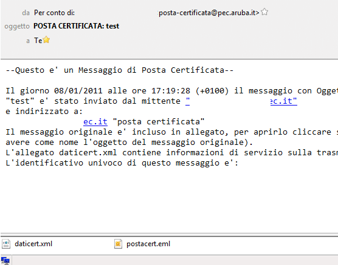
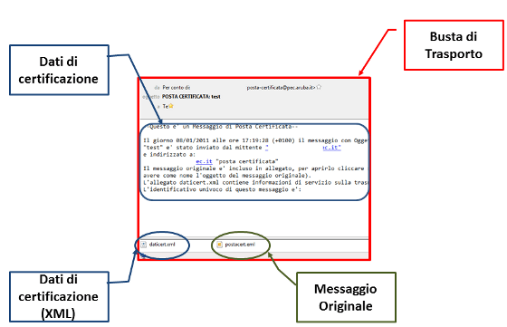
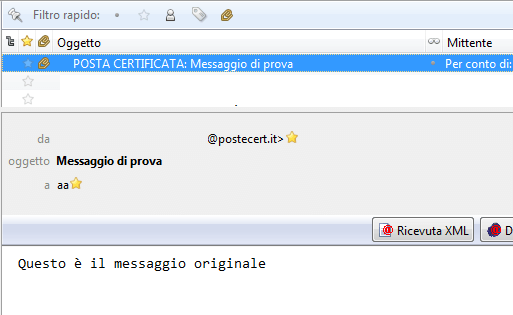
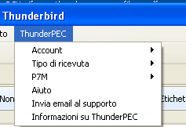
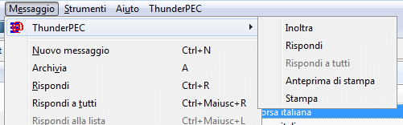
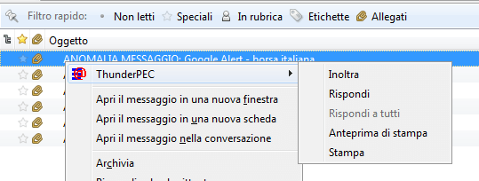
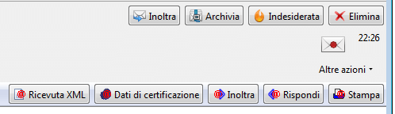
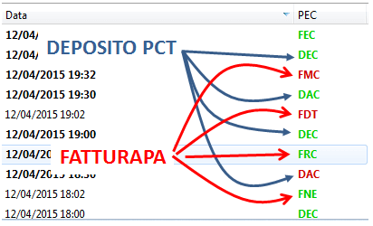

La Posta Elettronica Certificata nasce per sostituire il servizio di
posta raccomandata nella comunicazione tra i professionisti, i cittadini
e le istituzioni rendendo più efficiente il meccanismo di
comunicazione. Il sistema, basandosi sullo standard S/MIME, certifica lo
scambio di documenti tra il mittente ed il destinatario della
comunicazione e informa automaticamente il mittente sullo stato della
comunicazione fornendo ricevute che hanno valenza legale.
ThunderPEC si propone come strumento per la gestione semplificata della posta elettronica certificata in Thunderbird.
Un messaggio di posta elettronica certificata è costituito da una Busta di Trasporto
che contiene il messaggio di posta elettronica originale inviato dal
mittente ed un allegato XML che riassume i dati della transazione. La
busta di trasporto è firmata digitalmente dal gestore PEC sorgente.
Su di un normale client di posta elettronica, il messaggio PEC è visualizzato come nella seguente figura.

Nella
figura sono visibili, il messaggio di posta elettronica originale,
trasportato come allegato in postacert.eml e l'allegato XML con i dati
della transazione

ThunderPEC visualizza direttamente il
messaggio di posta elettronica originale ed offre gli strumenti per
poter operare sul messaggio originale.

Inoltre, gestisce le notifiche PEC inviate dai gestori PEC coinvolti nella transazione.
ThunderPEC introduce i seguenti elementi grafici:
Il menu ThunderPEC

Il sottomenu ThunderPEC all'interno del menu Messaggio

Il menu contestuale ThunderPEC

La toolbar di gestione di un messaggio PEC

La colonna PEC
